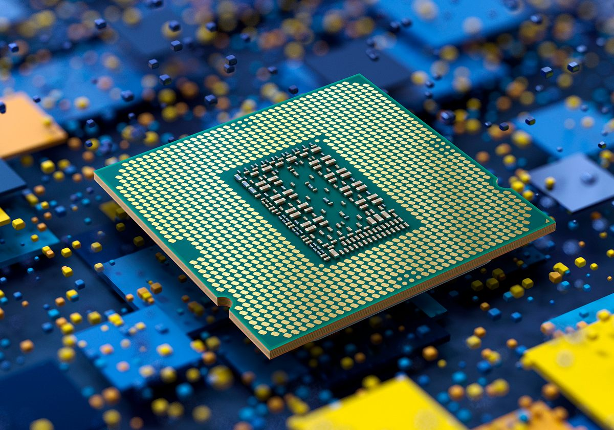
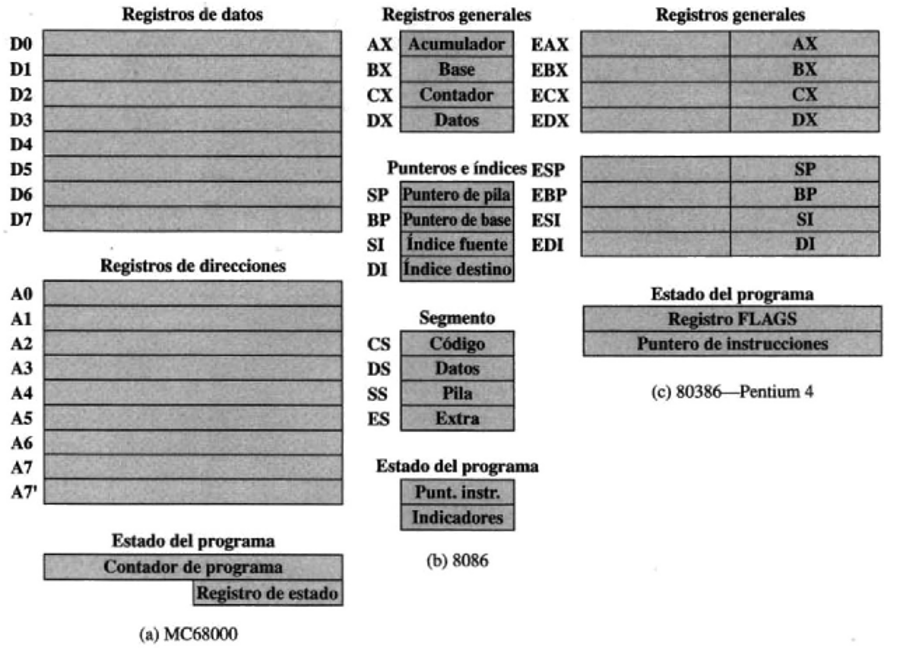
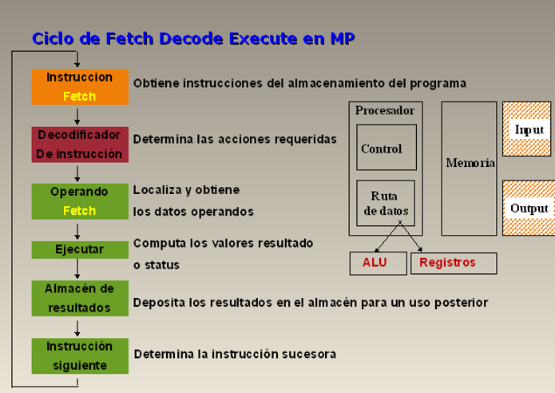
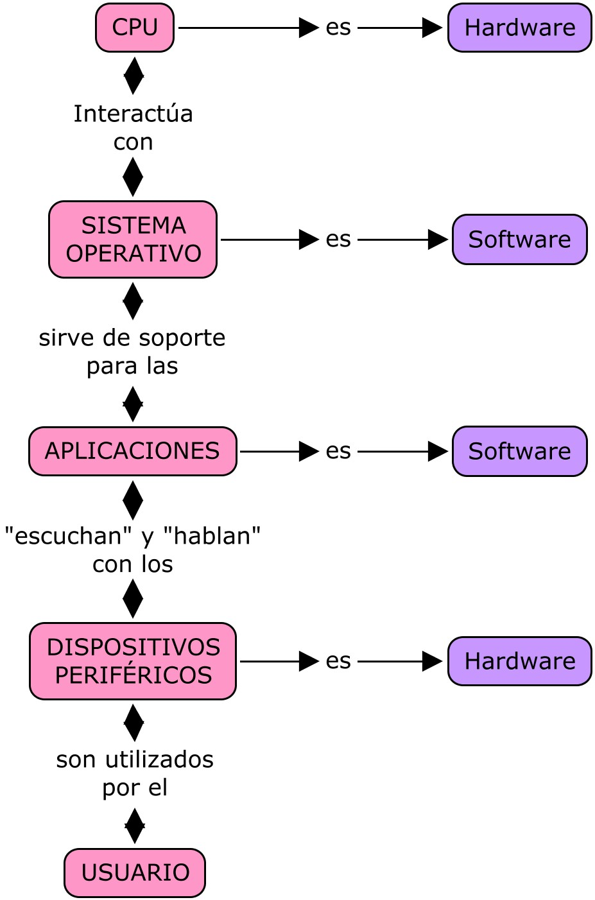
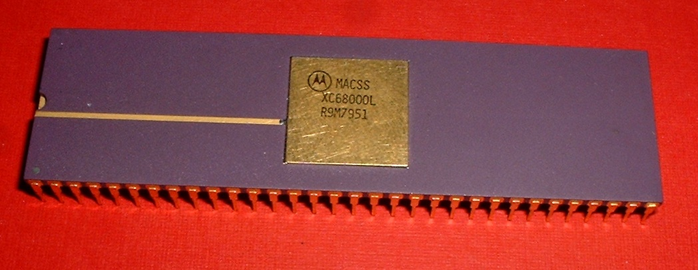

Unidad 2
2.1. Organización del procesador
La Unidad de Procesamiento (CPU) controla el funcionamiento del computador y lleva a cabo sus funciones de procesamiento de datos. Frecuentemente se le llama procesador.
 Un procesador, incluye tanto registros visibles por el usuario como registros de control/estado. Los registros visibles por el usuario pueden ser de uso general o tener una utilidad especial, mientras que los registros de control y estado se usan para controlar el funcionamiento del procesador, un claro ejemplo es el contador de programa.
Lleva a cabo una gran variedad de:
- Cálculos
- Comparaciones numéricas
- Transferencia de datos como respuesta a las peticiones de los programas que estan siendo ejecutados en memoria
La CPU controla las operaciones básicas del ordenador enviando y recibiendo señales de control, direcciones de memoria y datos de un lugar a otro de la computadora a través de un grupo de canales llamados BUS.
La Unidad Central de Proceso está constituida internamente por:
- La unidad de control
- Unidad Aritmética-Logica
Unidad Aritmético-Lógica (ALU)
Recibe los datos sobre los que efectúa operaciones de cálculo y comparaciones. Toma decisiones lógicas (determina si una afirmación es correcta o falsa mediante reglas del algebra de Boole) y devuelve luego el resultado. Todo ello bajo supervisión de la unidad de control.
La Unidad de Control
La unidad de control le indica al resto del sistema como llevar a cabo las instrucciones de un programa. Comanda las señales electrónicas entre la memoria y la unidad aritmético-lógica, y entre el CPU y los dispositivos de entrada y salida. Para ejecutar cualquier programa, cada comando del mismo se desglosa en instrucciones.
Los procesadores utilizan la segmentación de instrucciones para acelerar la ejecución. La segmentación de cauce se puede dividir en ciclo de instrucción en varias etapas separadas que operan secuencialmente, tales como la captación de instrucción, decodificación de instrucción, cálculo de direcciones de operando, ejecución de instrucción y estructura del operando resultado.
2.2. Estructuras de registros
Los registros del CPU se emplean para controlar las instrucciones en ejecución, manejar direccionamiento de memoria y propiciar la capacidad aritmética.
Los registros vienen de tres tipos: datos, direcciones e índice, que tiene lugar en casi todos los aspectos de la operación del CPU. El tamaño de un registro depende del CPU; los más simples tienen registros que aceptan 8 o 16 bits de datos y los más complejos tienen registros de 32, 48 o 64 bits.
2.2.1. Registros visibles para el usuario
Permiten al programador del lenguaje de máquina o de ensamblador minimizar las referencias a memoria principal por medio de la optimización del uso de registros.
Un registro visible por el usuario es aquel que puede ser referenciado por medio del lenguaje de máquina que ejecuta el procesador. Podemos clasificarlos en las siguientes categorías:
Uso general: Pueden ser asignados por el programador a diversas funciones. A veces, su uso dentro del repertorio de instrucciones es ortogonal a la operación. Es decir, cualquier registro de uso general puede contener el operando para cualquier código de operación. Sin embargo, existen restricciones. Por ejemplo, puede haber registros específicos para operaciones en coma flotante y para operaciones con la pila.
2.2.2 Registros de control y de estado
Son utilizados por la unidad de control para controlar el funcionamiento del procesador y por programas privilegiados del sistema operativo para controlar la ejecución de programas.
Hay diversos registros de la CPU que se emplean para controlar su funcionamiento, la mayoría de ellos, en muchas máquinas, no son visibles por el usuario. Algunos de ellos pueden ser visibles a instrucciones de máquina ejecutadas en un modo de control o de SO.
Naturalmente máquinas diferentes tendrán diferentes organizaciones de registros y usarán distinta terminología. Son esenciales cuatro registros para la ejecución de una instrucción:
- Contador de programa (PC) contiene la dirección de la instrucción a captar.
- Registro de instrucción (IR) contiene la instrucción captada más recientemente.
- Registro de dirección de memoria (MAR) contiene la dirección de una posición de memoria
- Registro intermedio de memoria (MBR) contiene la palabra de datos a escribir en memoria, o la palabra leída más recientemente
2.2.3 Ejemplos de registros de CPU reales
Resulta instructivo examinar y comparar las organizaciones de registros de sistemas análogos. En esta sección, examinamos dos microprocesadores de 16 bits que fueron diseñados aproximadamente al mismo tiempo: el Motorola MC68000 [STRI79] y el lntel 8086 [MORS78].
 Las (a) y (b) representan la organización de registros de cada uno de ellos; los registros estrictamente internos, tales como el registro de dirección de memoria, no se muestran. En la (c) se ilustra un segundo aspecto instructivo acerca del diseño de la organización de los registros. Esta figura muestra la organización de los registros visibles por el usuario en el Intel 80386 [ELAY85), un microprocesador de 32 bits diseñado como una ampliación del 8086'.
2.3 El ciclo de instrucciones
Un ciclo de instrucción (también llamado ciclo de fetch-and-execute o ciclo de fetchdecode-execute en inglés) es el período que tarda la unidad central de proceso (CPU) en ejecutar una instrucción de lenguaje máquina.
Comprende una secuencia de acciones determinada que debe llevar a cabo la CPU para ejecutar cada instrucción en un programa. Cada instrucción del juego de instrucciones de una CPU puede requerir diferente número de ciclos de instrucción para su ejecución. Un ciclo de instrucción está formado por uno o más ciclos máquina.
2.3.1 Ciclo Fetch-Decode-Excecute
- Buscar la instrucción en la memoria principal
- Se vuelca el valor del contador de programa sobre el bus de direcciones
- Entonces la CPU para la instrucción de la memoria principal a través del bus de datos al registro de datos de memoria (MDR).
- A continuación el valor del MDR es colocado en el Registro de Instrucción Actual (CIR), un circuito que guarda la instrucción temporalmente de manera que pueda ser decodificada y ejecutada.
- Decodificar la instrucción
- El decodificador de instrucción interpreta e implementa la instrucción.
- El registro de instrucción (IR) mantiene la instrucción en curso mientras el contador de programa (PC, program counter) guarda la dirección de memoria de la siguiente instrucción a ser ejecutada.
- Recogida de datos desde la memoria principal
- También se lee la dirección efectiva de la memoria principal si la instrucción tiene una dirección indirecta, y se recogen los datos requeridos de la memoria principal para ser procesados y colocados en los registros de datos.
- Ejecutar la instrucción
- A partir del registro de instrucción, los datos que forman la instrucción son decodificados por la unidad de control.
- Ésta interpreta la información como una secuencia de señales de control que son enviadas a las unidades funcionales relevantes de la CPU para realizar la operación requerida por la instrucción.
- Almacenar o guardar resultados
- El resultado generado por la operación es almacenado en la memoria principal o enviado a un dispositivo de salida dependiendo de la instrucción.
- Basándose en los resultados de la operación, el contador de programa se incrementa para apuntar a la siguiente instrucción o se actualiza con una dirección diferente donde la próxima instrucción será recogida.
- Los pasos 1 y 2 del ciclo de instrucción se conocen como ciclo de búsqueda (fetch). Estos pasos son idénticos en todas las instrucciones.
- El ciclo de búsqueda procesa la instrucción a partir de la palabra de instrucción, que contiene el código de operación y el operando.
- Los pasos 3 y 4 del ciclo de instrucción se conocen como ciclo de ejecución. Estos pasos cambiarán con cada tipo de instrucción.
- El primer paso del ciclo de ejecución es el proceso de memoria, en que los datos se transfieren entre la CPU y el módulo de entrada/salida (I/O).
- A continuación se produce el proceso de datos, que usa operaciones matemáticas así como operaciones lógicas en referencia a los datos.
- Después tiene lugar el paso de alteraciones centrales, que son una secuencia de operaciones, por ejemplo una operación de salto. El último paso es una operación combinada de todos los otros pasos.
-

2.3.2 Segmentación de instrucciones
Es una técnica que permite implementar el paralelismo a nivel de instrucción en un único procesador. La segmentación intenta tener ocupadas con instrucciones todas las partes del procesador dividiendo las instrucciones en una serie de pasos secuenciales que efectuarán distintas unidades de la CPU, tratando en paralelo diferentes partes de las instrucciones. Permite una mayor tasa de transferencia efectiva por parte de la CPU que la que sería posible a una determinada frecuencia de reloj, pero puede aumentar la latencia debido al trabajo adicional que supone el propio proceso de la segmentación.
Número de pasos
El número de pasos dependientes varían según la arquitectura de la máquina. Algunos ejemplos:
- Entre 1956 y 1961, el proyecto IBM stretch proponía los términos Fetch (Lectura), Decode (Decodificación) y Execute (Ejecución) que se convirtieron en habituales.
-
La segmentación RISC clásica comprende:
- Lectura de instrucción
- Decodificación de instrucción y lectura de registro
- Ejecución
- Acceso a memoria
- Escritura de vuelta en el registro
- Las microcontroladoras Atmel AVR y PIC disponen cada una de segmentación de dos etapas.
- Muchos diseños incluyen segmentación de 7, 10 e incluso 20 etapas (como es el caso del Pentium 4 de Intel)
- Los núcleos "Prescott" y "Cedar Mill" de la microarquitectura NetBurst de Intel, utilizados en las versiones más recientes del Pentium 4 y sus derivados Pentium D y Xeon, tienen una segmentación de 31 etapas.
- El "Xelerated X10q Network Processor" cuenta con una segmentación de más de 1000 etapas, si bien en este caso 200 de estas etapas representan CPU independientes con instrucciones programadas de forma individual. Las etapas restantes se usan para coordinar los accesos a la memoria y las unidades funcionales presentes en el chip.
- Conforme la segmentación se hace más "profunda" (aumentando el número de pasos dependientes), un paso determinado puede implementarse con circuitería más simple, lo cual puede permitir que el reloj del procesador vaya más rápido. En inglés, las segmentaciones de este tipo pueden llamarse superpipelines.
- Se dice que un procesador está totalmente segmentado si puede leer una instrucción en cada ciclo. Por tanto, si ciertas instrucciones o condiciones requieren un retardo que impide la lectura de nuevas instrucciones, el procesador no está totalmente segmentado.
2.3.3 Conjunto de instrucciones
Ante el diseño de un nuevo ordenador de propósito general hay que plantearse la siguiente cuestión: ¿Qué tipos de instrucciones deben ser incluidos en su conjuntos de instrucciones? Antes de responder a esta pregunta, analizaremos las características que deben tener los juegos de instrucciones de las máquinas. Los conjuntos de instrucciones de las máquinas deben tender a poseer una serie de propiedades, bastante ideales e imprecisas, que pueden resumirse en las siguientes: El conjunto de instrucciones de un computador debe ser completo en el sentido de que se pueda construir un programa para evaluar una función computable usando una cantidad de memoria razonable y empleando un tiempo moderado, es decir, el número de instrucciones de ese programa no debe ser demasiado elevado.
 Los juegos de instrucciones también tienen que ser eficientes, esto significa que las funciones más necesarias deben poder realizarse usando pocas instrucciones. El conjunto de instrucciones de una máquina debe ser regular, es decir debe ser simétrico (por ejemplo, si existe una instrucción de desplazamiento a la izquierda, debe haber otra de desplazamiento a la derecha, etc.) y ortogonal, es decir, deben poder combinarse, en la medida de lo posible, todos las operaciones con todos los tipos de datos y modos de direccionamiento. En muchas ocasiones, también se le debe exigir a un computador que su juego de instrucciones sea compatible con modelos anteriores.
Tipos de instrucciones
Una máquina puede llegar a funcionar con un juego de instrucciones muy limitado (recuérdese, por ejemplo, la máquina de Turing que sólo tiene 4 instrucciones, incluso se han diseñado máquinas teóricas con menos instrucciones), esto simplificaría mucho los circuitos de la máquina. Sin embargo, un conjunto de instrucciones demasiado simplificado origina, como consecuencia, unos programas demasiado complejos e ineficientes. Es necesario encontrar un compromiso entre la simplicidad del hardware y del software.
Un mínimo para llegar a ese compromiso se consigue con los tipos de instrucciones siguientes: Instrucciones de transferencia de datos. Instrucciones aritméticas. Instrucciones lógicas. Instrucciones de control del flujo del programa (bifurcaciones, bucles, procedimientos, etc.) Instrucciones de entrada y salida. En los apartados siguientes iremos viendo con detalle algunos de estos tipos de instrucciones. Si bien es cierto que el conjunto de instrucciones debe de cumplir unos mínimos para conseguir una mínima eficiencia en los programas, también se verá que ésta no se aumenta indefinidamente al incrementar el número de instrucciones de la máquina.
2.3.4 Modelos de direccionamiento
Son un mecanismo que permite conocer la ubicación de un objeto (dato o instrucción).Un computador debe disponer de varios modos de direccionamiento. No todos los modos de direccionamiento están implementados en todos los computadores.
Los modos de direccionamiento disponibles están determinados por la arquitectura interna de la máquina y por el repertorio de instrucciones.
La Dirección efectiva de un operando (EA): Se refiere a la dirección de una localidad de memoria con respecto a una dirección inical de un segmento, estas pueen tomar valores que van desde 0000H hasta FFFFH (H: valor en hexadecimal).
Dirección física (PA): también llamada dirección final, esta es calculada con la dirección efectiva y un registro de segmento a propiado. Fórmula para calcuar la dirección física: PA=EA+10H+Despazamiento
Tipos de modos de direccionamiento:
- Direccionamiento inmediato
- Direccionamiento directo
- Direccionamiento por registro
- Direccionamiento inmediato por registro
- Direccionamiento relativo por registro
- Direccionamiento índice más base
- Direccionamiento relativo índice más base
2.4 Casos de estudio de CPU reales
I-8086: Los registros del procesador, se usan para contener los datos con que se está trabajando puesto que el acceso a los registros es mucho más rápido que los accesos a memoria. Se pueden realizar operaciones aritméticas y lógicas, comparaciones, entre otras. Los modos del 8086 son indirectos por registro, indexados o directos por registro.
 Motorola 68000: El mismo direccionamiento lleva implícito el tipo de registro sobre el que trabaja (direcciones o datos). Está basado en dos bancos de 8 registros de 32 bits. Un banco es de datos (Dn) y el otro de punteros (An). Además contiene un contador de programa de 32 bits y un registro de estado de 16 bits.
80386: Para este microprocesador existe un modo nuevo que requiere un byte adicional denominado SIB (escala, índice, base) que se añade al byte de operandos, es útil para direccionar elementos de vectores de longitudes diferentes en bucles. Es una alternativa a los modos autoindexados que esta máquina no soporta.